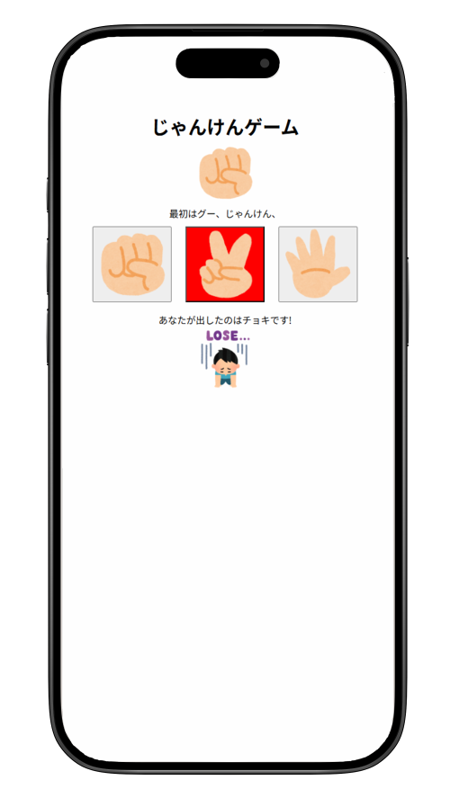
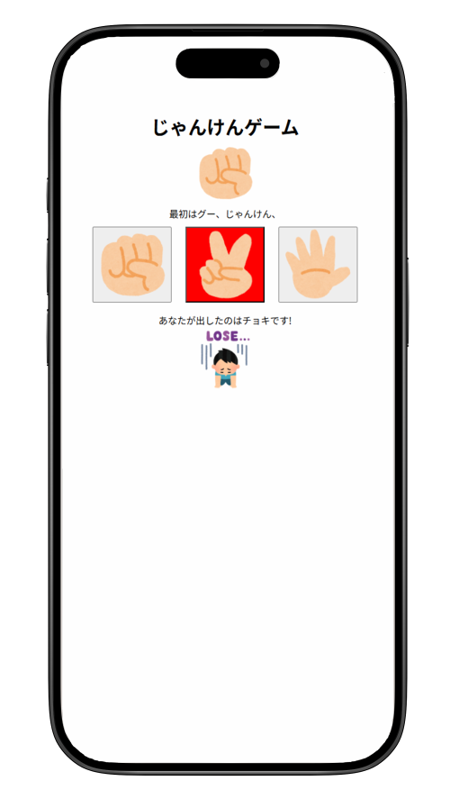

Works -制作物-
じゃんけんゲーム
 

概要
JavaScriptを使った簡単なじゃんけんゲームができるアプリケーションです。自分の手を選ぶと自動でコンピューターの手が決まり、結果が表示されます。
制作ポイント
グーチョキパーをわかりやすいようにイラストを表示させ、じゃんけん結果に応じて勝ち負けの画像のつけています。一番はじめに作ったJavaScriptのアプリなので、少しわかりにくいところもあり、時間があれば直したいです。
使用ツール
Visual Studio Code
使用画像
リンク